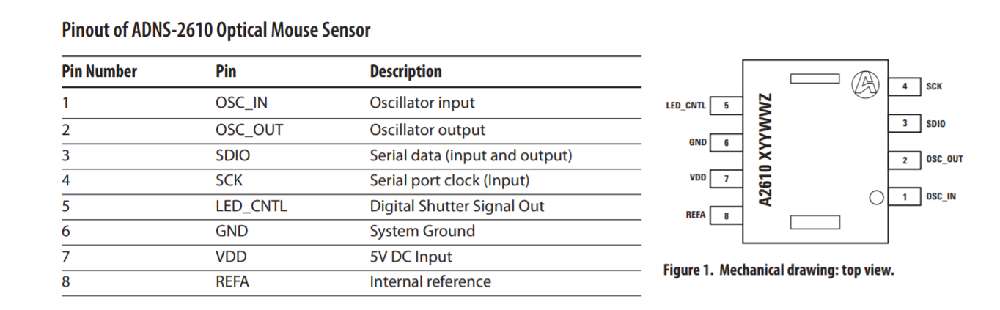
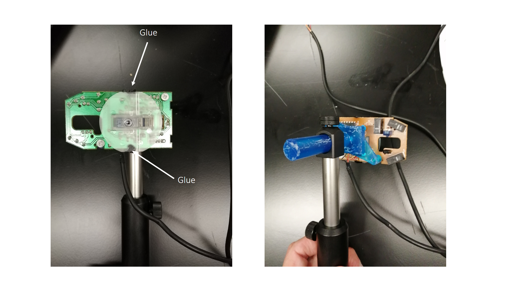

Optical motion sensors
Sensors
To measure the position of the sphere, we used two PCB boards based on the Avago Technologies ADNS-2610 [1] optical flow sensor and extracted from the Logitech M-SBF96 PS2 computer mouse. This sensor presents high reliability for speeds under 30.5 cm/s, and has a register that outputs the SQUAL value, a reference for the quality of the surface. This SQUAL value can be used for calibration and optimization.
|  |
|---|
| Figure 1. Pinout of the ADNS-2610 |
The PCB and lens are attached to a 3D printable structure and assembled with 3 Thorlabs components.
|  |
|---|
| Figure 2. Optical sensor |
Bill of materials (per sensor)
The 3D-printed parts have been designed to be printed optimally with an Objet 30 (Polyjet resin printer), but have also been printed with a Form 2 (SLS resin printer). We used the Vero gray resin and the Clear V4 resin with the Objet 30 and the Form 2 respectively. Printer settings were kept at default.
| Component | Quantity | Supplier | Reference |
|---|---|---|---|
| Optical mouse | 1 | - | example link |
| Sensor holder | 1 | 3D printed | STEP file, STL file |
| PH75/M | 1 | Thorlabs | link |
| RA180/M | 1 | Thorlabs | link |
| TR75V/M | 1 | Thorlabs | link |
| M3 x 6 mm | 2 | RS Components | link |
| M3 threaded insert | 2 | RS Components | link |